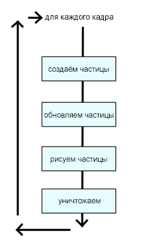

Анимация
Анимация через requestAnimationFrame
Теперь, когда мы знаем, как нарисовать много интересных штук, давайте оживим их. Первое, что нужно знать об анимации — это просто рисование одного и того же снова и снова. Когда вы вызываете функцию рисования, то она сразу же добавляет что-то на экран. Если вы хотите анимировать это, просто подождите несколько миллисекунд и нарисуйте это заново. Конечно, вы не хотите сидеть в ожидании пока цикл не прервётся браузером. Вместо этого вы должны нарисовать что-то, затем попросить браузер вызвать это снова через несколько миллисекунд. Самый простой способ сделать это — с помощью функции JavaScript setInterval(). Она будет вызывать вашу функцию рисования каждые N мс.
Однако в реальности мы никогда не должны использовать setInterval. setInterval всегда будет рисовать с одной скоростью, независимо от того, какой у пользователя компьютер, что делает пользователь и активна ли текущая страница. Короче говоря, это работает, но не эффективно. Вместо этого мы должны использовать новый API requestAnimationFrame.
requestAnimationFrame был создан, чтобы сделать анимацию плавной и эффективной в плане затрат. Вы вызываете её с указателем на свою функцию рисования. В какой-то момент в будущем браузер вызовет вашу функцию рисования, когда браузер окажется готов. Это даёт браузеру полный контроль над рисованием, так что он может снизить частоту кадров при необходимости. Браузер также может сделать анимацию более плавной, зафиксировав частоту обновления экрана на 60 кадрах в сек. Чтобы зациклить анимацию просто вызовите requestAnimationFrame рекурсивно в начале.
requestAnimationFrame становится стандартом, но большинство браузеров поддерживает только свои собственные версии с префиксом. Например, Chrome использует webkitRequestAnimationFrame, а Mozilla поддерживает mozRequestAnimationFrame. Чтобы исправить это, мы воспользуемся скриптом Пола Ириша. Он просто соединяет разные варианты в новой функции: requestAnimFrame.
// setTimeout в качестве запасного варианта
window.requestAnimFrame = (function(){
return window.requestAnimationFrame ||
window.webkitRequestAnimationFrame ||
window.mozRequestAnimationFrame ||
window.oRequestAnimationFrame ||
window.msRequestAnimationFrame ||
function( callback ){
window.setTimeout(callback, 1000 / 60);
};
})();Попробуем простой пример, в котором мы анимируем прямоугольник на экране.
Базовая анимация прямоугольник с помощью requestAnimFrame (щёлкните для запуска)
Очистка фона
Теперь вы заметили проблему. Наша прямоугольник движется по экрану, обновляясь на пять пикселей через каждые 100 миллисекунд (или 10 кадров в сек.), но старый прямоугольник остаётся. И выглядит так, что прямоугольник становится только длиннее и длиннее. Помните, что холст это просто набор пикселей. Если вы установите несколько пикселей, то они будут оставаться там до тех пор, пока не изменятся. Итак, давайте очистим холст в каждом кадре, прежде чем мы нарисуем прямоугольник.
var x = 0;
function drawIt() {
window.requestAnimFrame(drawIt);
var canvas = document.getElementById('canvas');
var c = canvas.getContext('2d');
c.clearRect(0,0,canvas.width,canvas.height);
c.fillStyle = "red";
c.fillRect(x,100,200,100);
x+=5;
}
window.requestAnimFrame(drawIt);Рисование прямоугольника через очистку фона (щёлкните для запуска)
Симулятор частиц
Это всё, что на самом деле нужно для анимации. Рисовать что-то снова и снова. Попробуем нечто немного более сложное: симулятор частиц. Мы хотим, чтобы некоторые частицы падали вниз по экрану подобно снегу. Для этого мы реализуем классический алгоритм симулятора частиц:

Симулятор частиц содержит список зацикленных частиц. В каждом кадре положение всех частиц обновляется основываясь на некотором уравнении, при необходимости частицы уничтожаются/создаются на основе некоторого условия. Затем частицы рисуются. Вот простой пример снега.
var canvas = document.getElementById('canvas');
var particles = [];
function loop() {
window.requestAnimFrame(loop);
createParticles();
updateParticles();
killParticles();
drawParticles();
}
window.requestAnimFrame(loop);Вначале мы создаём основу симулятора частиц. Это функция цикла, которая вызывается каждые 30 мс. Для структуры данных нам требуется пустой массив частиц и счётчик тактов. На каждой итерации цикла выполняется четыре части.
function createParticles() {
// добавляем частицу, если их меньше 100
if(particles.length < 100) {
particles.push({
x: Math.random()*canvas.width, // между 0 и шириной холста
y: 0,
speed: 2+Math.random()*3, // между 2 и 5
radius: 5+Math.random()*5, // между 5 и 10
color: "white",
});
}
}Функция createParticles проверяет, сколько у нас частиц. Если их меньше 100, то создаёт новую частицу. Обратите внимание, что проверка выполняется только каждые 10 тактов. Это позволяет начать с пустого экрана, а затем постепенно наращивать число частиц, а не создавать все 100 с самого начала. Вы можете настроить параметры в зависимости от желаемого эффекта. Я использую Math.random() и другую арифметику чтобы убедиться, что снежинки располагаются в разных местах и не выглядят одинаковыми. Так снег становится более натуральным.
function updateParticles() {
for(var i in particles) {
var part = particles[i];
part.y += part.speed;
}
}Функция updateParticles довольно простая. Она обновляет координату каждой частицы, добавляя ей скорость. Это заставляет снежинку двигаться вниз по экрану.
function killParticles() {
for(var i in particles) {
var part = particles[i];
if(part.y > canvas.height) {
part.y = 0;
}
}
}Вот killParticles. Она проверяет что частица находится ниже нижнего края холста. В некоторых симуляторах вы уничтожаете частицу и удаляете её из списка. Поскольку это приложение показывает непрерывный снег, то мы повторно задействуем частицу, установив её обратно в 0.
function drawParticles() {
var c = canvas.getContext('2d');
c.fillStyle = "black";
c.fillRect(0,0,canvas.width,canvas.height);
for(var i in particles) {
var part = particles[i];
c.beginPath();
c.arc(part.x,part.y, part.radius, 0, Math.PI*2);
c.closePath();
c.fillStyle = part.color;
c.fill();
}
}Наконец рисуем частицы. Опять же это очень просто: очистите фон, нарисуйте круг с текущими координатами, радиусом и цветом частицы.
Теперь это выглядит так.
Симулятор частиц для снега (щёлкните для запуска)
Вот за что я люблю симуляторы частиц, так это за то, что вы можете создать очень сложную и органичную, естественно выглядящую анимацию с довольно простой математикой, в сочетании с небольшой управляемой случайностью.
Анимация спрайтов
Что такое спрайт?
Заключительным основным видом анимации является анимация спрайта. Так что такое спрайт?
Спрайт — это маленькое изображение, которое вы можете быстро рисовать на экране. Обычно спрайт на деле вырезают из большого изображения, которое называется спрайт-лист или мастер-изображение. Такой лист может содержать несколько различных спрайтов, вроде разных персонажей игры. Спрайт-лист также может содержать один символ в разных положениях. В итоге это даёт вам разные кадры анимации. Это классический стиль анимации: просто пролистывать разные рисунки снова и снова.
Зачем и когда использовать спрайты?
Спрайты хороши для нескольких вещей.
- Во-первых, спрайт это изображение, которое, вероятно, рисуется быстрее, чем векторы, особенно сложные.
- Во-вторых, спрайты чрезвычайно удобны, когда вам нужно рисовать одну штуку снова и снова. Например, в игре Space Invaders у вас есть куча пуль на экране, которые все выглядят одинаково. Гораздо быстрее загрузить спрайт пули один раз и рисовать его снова и снова.
- В-третьих: спрайты быстро загружаются и рисуются как часть листа. Это позволяет загрузить единый файл для всего набора спрайтов гораздо быстрее, нежели полученную кучу отдельных изображений. Спрайты, как правило, также сжимаются лучше. Наконец, используется меньше памяти для хранения одного большого изображения, чем куча более мелких.
- В конце концов, спрайты удобны для работы с анимацией, потому что получаются из таких инструментов рисования, как Фотошоп. Код просто листает изображения и его не волнует, что на картинке. Это значит, что ваш художник может легко обновить графику и анимацию, не касаясь кода.
Рисование спрайтов
Спрайты легко нарисовать, используя функцию drawImage. Эта функция может рисовать и растягивать часть изображения путём указания разных исходных и конечных координат. К примеру, предположим, что у нас есть следующий спрайт-лист и мы просто хотим нарисовать пятый спрайт слева.

Мы можем нарисовать только этот спрайт, указав координаты исходника:
context.drawImage(
img, // изображение спрайт-листа
65,0,13,13, // исходные координаты (x,y,w,h)
0,0,13,13, // конечные координаты (x,y,w,h)
);Анимация спрайта
Как вы можете видеть на полном спрайт-листе, на деле это разные кадры анимации одного объекта, так что теперь пролистаем разные спрайты, чтобы создать анимацию. Мы сделаем это, отслеживая текущий кадр с помощью счётчика тактов.
var frame = tick % 10;
var x = frame * 13;
context.drawImage(
img, // изображение спрайт-листа
x,0,13,13, // исходные координаты (x,y,w,h)
0,0,13,13, // конечные координаты (x,y,w,h)
);
tick++;Каждый раз при обновлении экран мы вычисляем текущий кадр анимации глядя на счётчик тактов. Операция деления по модулю (%) на 10 означает зациклить кадр от 0 до 9 снова и снова. Затем вычисляется координата х в зависимости от количества кадров. После чего рисуется изображение и обновляется счётчик тактов. Конечно, это может происходить слишком быстро, так что вы можете делить такты по модулю на 2 или 3, чтобы анимация бежала медленнее.
Анимация каждые 10 кадров для детализации (щёлкните для запуска)
В следующей главе мы создадим простую игру, в которой демонстрируется, как использовать базовую анимацию, анимацию спрайтов, события клавиатуры и простой симулятор частиц для взрывов.

Все материалы сайта доступны по лицензии Creative Commons «Attribution-NonCommercial» («Атрибуция — Некоммерческое использование») 4.0 Всемирная, если не указано иное.